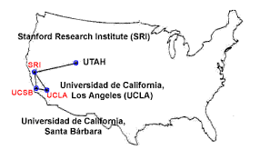

📡 Historia del Internet - Línea de Tiempo |
| 🏠 Inicio | Siguiente: 1971 → |
1969 - ARPANETEl Nacimiento de Internet
 Red ARPANET - Las primeras conexiones (1969) ¿Qué fue ARPANET?ARPANET (Advanced Research Projects Agency Network) fue la primera red de computadoras que utilizó el protocolo de conmutación de paquetes. Desarrollada por el Departamento de Defensa de Estados Unidos, esta red sentó las bases de lo que hoy conocemos como Internet. Contexto HistóricoEn plena Guerra Fría, Estados Unidos buscaba crear una red de comunicaciones descentralizada que pudiera resistir ataques nucleares. La ARPA (Advanced Research Projects Agency) fue la encargada de desarrollar esta tecnología revolucionaria en 1969. Las Primeras ConexionesEl 29 de octubre de 1969, se estableció la primera conexión entre dos computadoras: una en UCLA (Universidad de California, Los Ángeles) y otra en el Stanford Research Institute. Instituciones Inicialmente Conectadas:
El Primer Mensaje
Especificaciones Técnicas
Impacto y LegadoARPANET demostró que era posible crear una red de comunicaciones descentralizada y confiable. Los principios establecidos en esta red son la base del Internet moderno que usamos hoy en día. Logros Importantes:
📚 Enlaces RelacionadosPara más información sobre ARPANET, consulta:
|
| © 2026 - Historia del Internet | Evento: ARPANET 1969 |